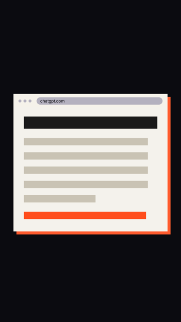
Browser window for real recordings
block:browser
Browser window that shows real screen recordings or screenshots (anim.py record/grab), with only the domain in the address bar and a zoom to the important part.
browser, window, recording, screenshot, screen recording, capture, website, url, zoom, real
const b = Blocks.browser(H, rootEl, {url})b.play(frames, fps, t0): recorded frames (assets/<name>/f001.jpg ...), the last one staysb.image(src, at): one screenshotb.zoom({x, y, w}, at[, dur])
anim.py use <slug> block:browser · demo: library/blocks/browser/demo.html
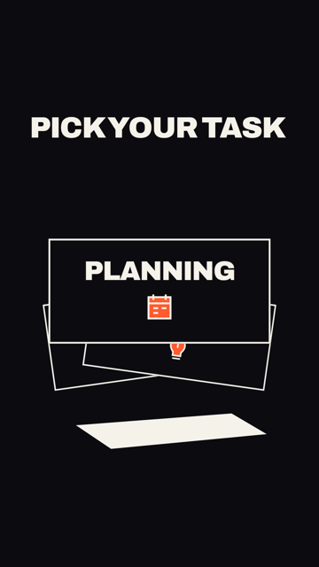
3D card stack
block:cards-3d
Three thick choice cards fan out and the chosen card comes forward.
cards, 3d, select, fan, choice
const b = Blocks.cards3d(H, root, {cards: [text, ...]})b.cards: DOM solidsb.spread(at)b.select(index, at)b.el, b.camera, b.shadow
anim.py use <slug> block:cards-3d · demo: library/blocks/cards-3d/demo.html
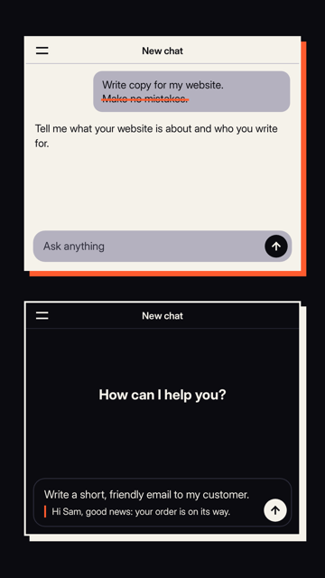
Chat screen (rebuilt, no logo)
block:chat
Rebuilt chat screen with an empty state, typing in the input field, sending, a streaming answer, strike-through and highlight; variants dark (ChatGPT-like), light (Claude-like) and mobile.
chat, chat screen, chatgpt, claude, conversation, prompt, input, typing, answer, stream, send, app, screen, dark, light, mobile, strike, highlight
const c = Blocks.chat(H, rootEl, {variant: 'dark'|'light'|'mobile', title, hello, placeholder, frame})c.center(at) / c.dock(at): input in the middle (empty chat) or at the bottomc.showHello(at) / c.hideHello(at)c.typeInto(text, t0, t1, {hot, block, struck}) -> seg; c.quote(text, at); c.strike(seg|el, at); c.untype(seg, t0, t1); c.clearInput(at)c.sendTo(at, text, {struck, chips}) -> {el, struck}: input clears, message flies up; c.bubble(text, at, opts)c.answer(text, t0, t1) -> spans (thinking dot, then words stream); c.highlight(spans, at); c.clearMessages(at)c.el, c.input, c.msgs, c.send: elements, e.g. to put a cursor click on c.send
anim.py use <slug> block:chat · demo: library/blocks/chat/demo.html
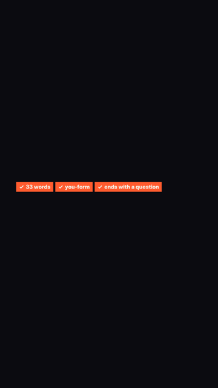
Checklist (ticks)
block:checklist
Row of accent labels with a check mark that appear one by one; shows that requirements or steps are met.
checklist, check, tick, ticks, requirements, done, passed, labels
const v = Blocks.checklist(H, rootEl, {items: [...]})v.show(at[, step])
anim.py use <slug> block:checklist · demo: library/blocks/checklist/demo.html
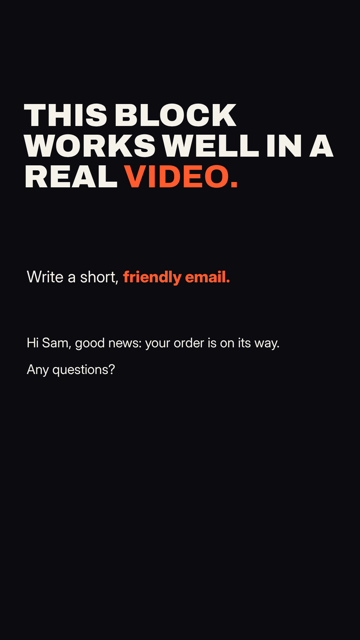
Core helpers (timing, typing, streaming)
block:core
Timing on the voice, show and hide, snap-ins, typing letter by letter, streaming words in and showing spoken words one by one; every other block uses this.
core, helpers, basics, timing, typing, stream, words, snap, captions, subtitles
const H = Blocks.core(tl[, words])H.ws(i), H.we(i): start/end of spoken word iH.show/hide(el, at), H.disp(el, display, at), H.snap(el, at[, from, dur])H.chars(parent, text[, 'b-hot']) -> spans; H.type(spans, t0, t1); H.untype(spans, t0, t1); H.wipe(spans, at)H.words(parent, text) -> spans; H.stream(spans, t0, t1)H.say(parent, a, b[, allHot]) -> spans: spoken words a..b-1 snap in, the current one in accent
anim.py use <slug> block:core · demo: library/blocks/core/demo.html
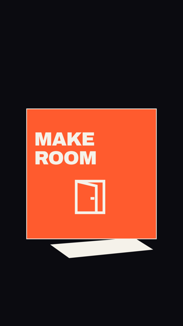
3D cube transition
block:cube-3d
One cube with two content faces turns left to the next scene.
cube, 3d, transition, turn
const b = Blocks.cube3d(H, root)b.front, b.next: DOM content slotsb.turn(at, duration)b.el, b.object, b.camera, b.shadow
anim.py use <slug> block:cube-3d · demo: library/blocks/cube-3d/demo.html
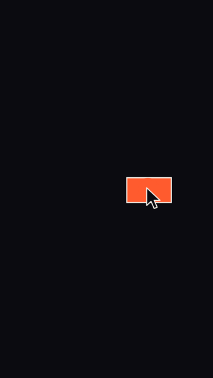
Cursor with click
block:cursor
Big mouse cursor that moves to a button and clicks, with a click ring; the click starts the next step.
cursor, mouse, click, button, pointer, point
const k = Blocks.cursor(H, rootEl)k.move(x, y, at[, dur]): eased move from the last spot (enters from the lower right)k.click(x, y, at): squash plus ring on `at`k.leave(at[, dur])
anim.py use <slug> block:cursor · demo: library/blocks/cursor/demo.html
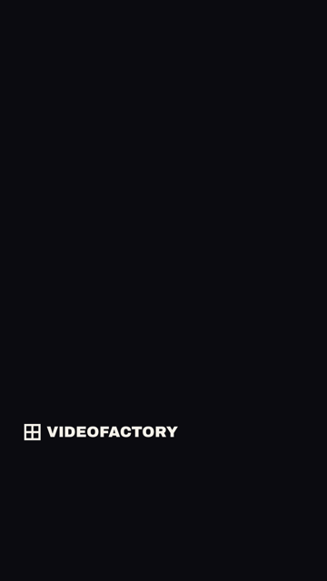
Wordmark end card
block:end-card
Crosshair mark with a wordmark that snaps in from the left at the end and stays until the video stops.
end card, wordmark, logo, brand, closing, outro, ending
const e = Blocks.endCard(H, rootEl, {wordmark, x, y})e.show(at)
anim.py use <slug> block:end-card · demo: library/blocks/end-card/demo.html
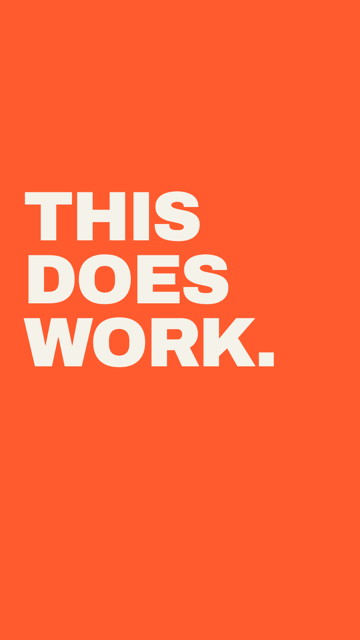
Full-screen panel (transition)
block:panel
Accent panel that slides in from the right over everything with big lines, then leaves to the left; a hard transition to a new part.
panel, transition, wipe, turn, heading, statement, full screen
const p = Blocks.panel(H, rootEl, {lines: [...], wordIdx: [...]})p.enter(at), p.exit(at)
anim.py use <slug> block:panel · demo: library/blocks/panel/demo.html
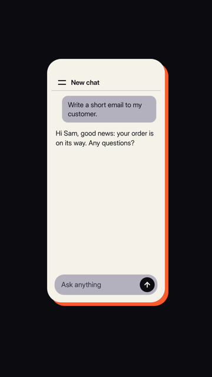
Phone frame
block:phone
Phone with an ink-coloured body, notch and hard shadow; the screen is the place for another block, such as the chat screen in the mobile variant.
phone, mobile, smartphone, app, frame, device, screen
const t = Blocks.phone(H, rootEl)t.screen: the box to give to another block (e.g. Blocks.chat(H, t.screen, {variant: 'mobile', frame: false}))t.el: the phone, e.g. for a camera move
anim.py use <slug> block:phone · demo: library/blocks/phone/demo.html
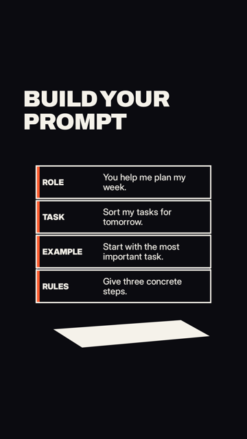
3D prompt layers
block:prompt-layers-3d
Role, task, example and rules separate in Z and click together into one prompt card.
prompt, layers, 3d, explode, assemble
const b = Blocks.promptLayers3d(H, root, {layers: [[label, text], ...]})b.layers: DOM solidsb.explode(at)b.assemble(at)b.el, b.camera, b.shadow
anim.py use <slug> block:prompt-layers-3d · demo: library/blocks/prompt-layers-3d/demo.html
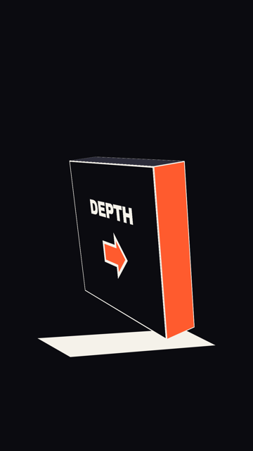
3D geometry helper
block:room-3d
Shared physical faces, drawings, camera container and hard shadow for the 3D blocks.
3d, geometry, helper, depth, thickness
const s = Blocks.room3d.scene(H, root)Blocks.room3d.solid(H, s.camera, width, height, depth)Blocks.room3d.drawing(parent, paths)Blocks.room3d.duration(seconds)
anim.py use <slug> block:room-3d · demo: library/blocks/room-3d/demo.html
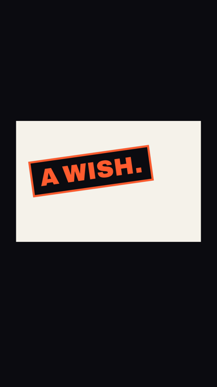
Stamp with shake
block:stamp
Tilted stamp that lands on the picture with a bang and a short shake of the screen under it; for the turning point or a verdict.
stamp, impact, slam, shake, verdict, label, emphasis
const s = Blocks.stamp(H, rootEl, {text, x, y, rotation, shake: elementToShake})s.slam(at): lands on `at`s.clear(at)
anim.py use <slug> block:stamp · demo: library/blocks/stamp/demo.html
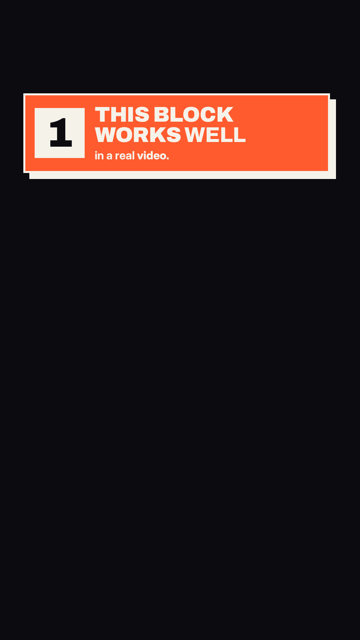
Numbered tip block
block:tip
Accent block with a big number and a title that comes in word by word with the voice; enters from the right and leaves to the left.
tip, number, step, list, title, heading, 1 2 3
const t = Blocks.tip(H, rootEl, {nr, words: [a, b] | title, sub: [a, b]})t.enter(at), t.exit(at)
anim.py use <slug> block:tip · demo: library/blocks/tip/demo.html